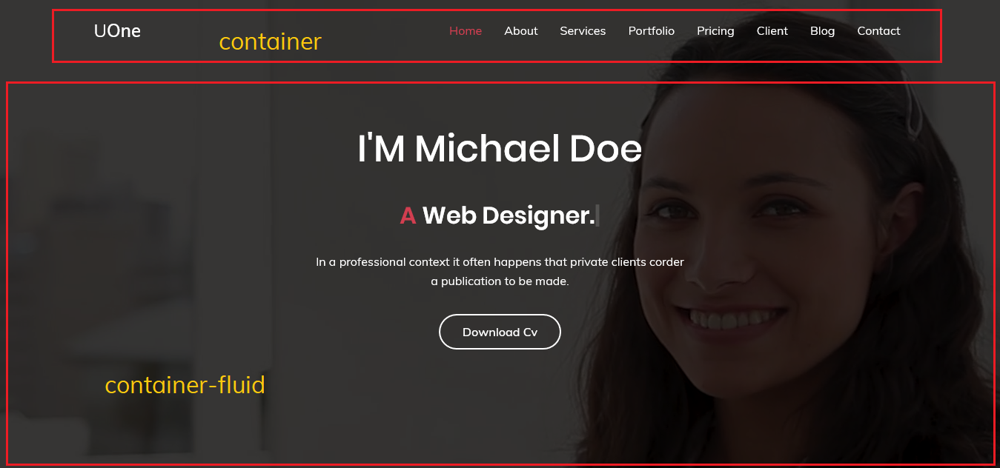
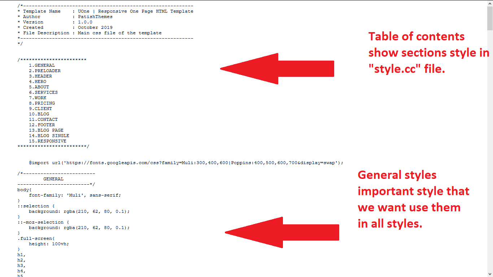

Uone Documentation
Welcome
Thanks for your purchasing UOne HTML Template.Although this template is very easy to customize, We provide you a simple but useful documentation for your problems with customization.
In this template we put comment for all sections in HTML files, All sections styles in CSS files and all sections JQuery in UOne JS file.
HTML Structure
The template is based on Bootstrap 4.3.1 Framework - http://getbootstrap.com
Bootstrap includes a responsive, mobile first fluid grid system that appropriately scales up to 12 columns as the device or viewport size increases.
<div class="row">
<div class="col-md-12">
Level 1 column
<div class="row">
<div class="col-md-6">Level 2</div>
<div class="col-md-6">Level 2</div>
</div>
</div>
</div>
If you need more information, please visit this site: http://getbootstrap.com/css/#grid
In HTML files we used bootstrap container and container-fluid classes. when we need use all screen width we use container-fluid class and if we need have a box little than our screen width we use container class in our sections.
We have two example below. Red boxes are container and container-fluid classes.
We have different Demos, U can choose one of them base on your requirement.
for better understanding you can see 'Hero Section'code below.
1
2
7
8
9
10
11
12 I'M Michael Doe
13 A
14 In a professional context it often happens that private clients corder a publication to be made.
15
16 Download Cv
17
18
19
20
21
22
23
For another sections that have Repetitious method you can use top example.
In Services, Portfolio, Price table, Testimonials and Blog section you can see these Repetitious method and can add or remove them.
Portfolio
In Uone HTML template files we have different sections.
In portfolio section, Images are in different categories.
To know how to do this, watch codes below and the description after that.
In "a" tags we have "data-filter" property, The value of this filters use for items that we want to be in a category. for example ".webdesign" use for portfolio Items that are in web design category. You can use multiple values in one item. "*" value select all items.
Fonts
Here We have two types of fonts. First is Google Fonts and The other is Font Icons
We pick our fonts from Google Fonts . In this website you can learn how to pick your favorite font and use that in your website template.
Our Font Icons are from LineIcons and Font Awesome. In this website you can learn how to pick your favorite font icon and use that in your website template. But if you want customize your social icons or another Icons you can see the codes below
In "Social Icons" you can see "i" tags. In their class you see "fa fa-facebook " and others. In Font Awesome wbesite you can pick your icon name and put it to class of "i" tag. We copy them below to show better.
In "Services Section" you can see "i" tags. In their class you see " lni-brush-alt " and others. In LineIcons wbesite you can pick your icon name and put it to class of "i" tag. We copy them below to show better.
Graphic Design
In a professional context it often happens that private clients corder a publication to be made.
Images
Images makes templates more beautiful and useful. In UOne HTML templates we have Slider, Background, Banner, Portfolio, Blog and ... Images.
Images comes with "img" tag in HTML files. You can put your image URL in this tag and see that on your website.
You can see some sample "img tags" in "Portfolio Section" below
.
.
 .
.
.
.
.
.
.
.
 .
.
.
.
.
.
.
.
 .
.
.
.
"alt" In "img" tag is the name of image for search engines and browsers. When a browser can't show image, user see the name in "alt" and know what image was in this section.
We put "/" in "alt" in "img" tags because of this is only a demo template. But you must put your images name because of SEO and your users.
Images URL in portfolio section items are in two tags, first is "img" tags and other is "a" tags. We described "img" tags in top, But what is "a" tags here and what is their usage?
In fact these tags are for Magnific Popup JQuery. When In Portfolio section click on "Plus Icon" in images hover you can see images bigger and better. This is from URL of images in "a" tag in Magnific Popup JQuery.
You can see "a" tags code and these action in an image below.

Video
You can add your favorite video from your local storage or online video in your template.
If you want to use online video you should add embed code in your index or you can add url link in href of 'a' tag.
In Uone HTML template files we use url in "a" tag.
You can See example below
Also you can add video to background
In Uone HTML template files we have background video in hero section. We use that with relative url address.
you can see code below
CSS Structure
HTML is the structure of a template and CSS is the design. In CSS we paint and make codes beautiful.
In Uone HTML template CSS files, we use some libraries and make them powerful and more beautiful in Style CSS file.
"Table of contents" In Style CSS file help you to find each section styles and you can change or customize them there.
Main CSS
"General Styles" are important styles that we want use them in all template design in "Style CSS" file. But there are some styles that we don't want use general styles them. Because of this reason we use "General Styles" in top of all styles in "Style CSS" file. browsers read styles line by line and if you have to class with same styles but variation data browsers read second class. you can see an image of "General Styles" below
Top image is from "style.css" file
Fonts in css
Fonts are very important for making template and text more and more beautiful. Then we should use them in CSS files. After picking one or more fonts from Google Fonts, that website show you how to use them in your template or website. We bring an example for you from "General Styles" of "style.css"
/*-------------------------
GENERAL
-------------------------*/
.
.
body{
font-family: 'Muli', sans-serif;
.
.
}
h1,
h2,
h3,
h4,
h5,
h6{
font-family: 'Poppins', sans-serif;
}
After all font families put a Backup font because sometimes some browsers can't support your font and try to read backup font at last if browser cant't read none of fonts will read "sans-serif" font.
Images in css
Images in CSS are different from HTML. We often use CSS for background images and define their width, height, position and ... . We bring background images styles from "style.css" for you below.
/*------------------------
HERO
-------------------------*/
.hero-section{
background-image: url(../img/hero-bg.jpg);
position: relative;
background-size: cover;
background-position: center center;
clip-path: ellipse(100% 55% at 48% 44%);
}
When we want bring an image for background in "Style CSS" we use "background-image: url(sample/img/image.jpg)". But when we want to use another properties after images URL we must change "background-image" to "background".
Media Screens
Bootstrap includes a responsive, mobile first fluid grid system that appropriately scales up to 12 columns as the device or viewport size increases. But sometimes text, images or ... don't work good in some screens. Because of this web designers and developers use "Media Screens" in CSS files to solve this problem. In Uone template CSS we use some media screens to make our theme fully responsive for all screens. You can see an example from "style.css" of Uone template below.
/*-------------------------
MEDIA SCREENS
-------------------------*/
@media (min-width: 768px) {
.pl-md-6{
padding-left: 4rem;
}
.hero-content h1{
font-size: 50px;
}
}
@media (max-width: 991px){
body{
padding-top: 63px;
}
.full-screen{
height: auto;
}
.header-section {
background-color: #fff;
padding: 0;
box-shadow: 0 1px 3px 0 rgba(0, 0, 0, 0.1);
}
.header-section .navbar-brand .light-logo {
display: none;
}
.header-section .navbar-brand .dark-logo{
display: inline-block;
}
.header-section button span{
color: #000;
}
.header-section nav li a {
color: #222;
}
.hero-section{
clip-path: none;
}
}
Javascript
After finishing template structure (HTML) and give that a beautiful design (CSS) we should give our template Mobility. We do this Important factor with "Java Script" and that awesome library "JQuery". Uone HTML template use beautiful and useful Java scripts like Particle, Owl Carousel (for sliders), Isotop JS and ... for users and customers. using and customize this template scripts are very easy and we describe important thing and options.
Uone JS File
"Uone.js" is Uone HTML Template main JavaScript file that all libraries are customize and ready for run there.
Smooth scroll js :
A lightweight script to animate scrolling to anchor links
/*-------------------------
SMOOTH SCROLL
-------------------------*/
function smoothScroll(){
"use strict";
$('.header-section .navbar-nav a').on('click', function(event) {
var $anchor = $(this);
$root.stop().animate({
scrollTop: $($anchor.attr('href')).offset().top - 60
}, 1500, 'easeInOutQuart');
event.preventDefault();
});
}
Header Sticky :
Sticky navigation is a term used to describe a fixed navigation menu on a webpage that remains visible and in the same position as the user scrolls down and moves about a site.Persistent navigation bars - or “sticky headers” - are now a web design standard.
/*-------------------------
HEADER STICKY
-------------------------*/
function headerSticky(){
"use strict";
if ($window.scrollTop() > 100) {
$('#header').addClass('header-sticky');
} else {
$('#header').removeClass('header-sticky');
}
}
Typed js :
Typed.js is a library that types. Enter in any string, and watch it type at the speed you've set, backspace what it's typed, and begin a new sentence for however many strings you've set.
/*-------------------------
TYPED JS
-------------------------*/
function typedJS() {
"use strict";
var options = {
strings: $(".element").attr('data-elements').split(','),
typeSpeed: 100,
backDelay: 3000,
backSpeed: 50,
loop: true
};
var typed = new Typed(".element", options);
}
Magnific Popup Js :
Magnific Popup is a responsive lightbox & dialog script with focus on performance and providing best experience for user with any device.
/*-------------------------
MAGNIFIC POPUP JS FOR VIDEO
-------------------------*/
function popUpVideo(){
"use strict";
$('.popup-youtube, .popup-vimeo, .popup-gmaps').magnificPopup({
disableOn: 700,
type: 'iframe',
mainClass: 'mfp-fade',
removalDelay: 160,
preloader: false,
fixedContentPos: false
});
}
/*-------------------------
MAGNIFIC POPUP JS
-------------------------*/
function portfolioPopup() {
"use strict";
if (('.portfolio-items').length > 0) {
$('.portfolio-items').each(function() {
$(this).magnificPopup({
delegate: '.js-zoom-gallery',
type: 'image',
gallery: {
enabled:true
}
});
});
}
}
Owl Carousel Js :
Touch enabled jQuery plugin that lets you create a beautiful responsive carousel slider. Owl Carousel is a neat little carousel with all the perks you could possibly need.
/*-------------------------
OWL CAROUSEL JS
-------------------------*/
function testimonialsCarousel() {
"use strict";
$(".testimonial .owl-carousel").owlCarousel({
items: 1,
nav: false,
autoplay: true,
loop: true,
dots: true,
mouseDrag: true,
touchDrag: true,
smartSpeed: 1000,
autoplayHoverPause: true,
});
}
Isotope js :
Isotope js is a JavaScript library that makes it easy to sort, filter, and add Masonry layouts to items on a webpage. ... In short, isotope adds interactivity to your layouts without requiring assistance from a server.
/*-------------------------
ISOTOPE JS
-------------------------*/
function portfolioIsotop() {
"use strict";
var $container = $('.portfolio-items');
var $filter = $('#portfolio-filter');
$container.isotope({
filter: '*',
layoutMode: 'masonry',
animationOptions: {
duration: 750,
easing: 'linear'
}
});
$filter.find('a').on("click",function() {
var selector = $(this).attr('data-filter');
$filter.find('a').removeClass('active');
$(this).addClass('active');
$container.isotope({
filter: selector,
animationOptions: {
animationDuration: 750,
easing: 'linear',
queue: false,
}
});
return false;
});
}
Wow Js:
Reveal Animations When You Scroll. Very Animate.css Friend .Easily customize animation settings: style, delay, length, offset, iterations...
If you want to use wow.js to develop commercial sites, themes, projects, and applications you are 100% free to do so! Your source code is kept proprietary. Just remember to include the entire contents of The MIT Licenses in your product.
Installing wow.js takes only seconds: Read the documentation
/*-------------------------
WOW Js
-------------------------*/
new WOW().init();
CountUp Js :
CountUp.js is a dependency-free, lightweight Javascript class that can be used to quickly create animations that display numerical data in a more interesting way. Despite its name, CountUp can count in either direction, depending on the start and end values that you pass.
Download the latest version from github and include it to your page using script tag
/*-------------------------
Count up
-------------------------*/
$(window).scroll(function () {
"use strict";
var scroll = $(window).scrollTop();
var countId = $('#count-up');
var winH = $(window).height(),
countOffset = countId.offset().top;
if (scroll + winH > countOffset) {
$('.timer').countTo();
$('.count-number').removeClass('timer');
}
});
Google Map Js :
Google Maps JavaScript API allows you to use the potential of Google Maps in a simple way. Learn the concepts, and create custom maps for your site.
/*-------------------------
GOOGLE Map
-------------------------*/
function mapInit() {
"use strict";
var options = {
center: new google.maps.LatLng(43.053454, -76.144508),
zoom: 11,
mapTypeControl: true,
panControl: false,
zoomControl: true,
zoomControlOptions: {
style: google.maps.ZoomControlStyle.DEFAULT,
position: google.maps.ControlPosition.TOP_LEFT
},
scaleControl: false,
styles: [{
"featureType": "water",
"elementType": "geometry",
"stylers": [{
"color": "#576ee9"
}, {
"lightness": 17
}]
}, {
"featureType": "landscape",
"elementType": "geometry",
"stylers": [{
"color": "#f5f5f5"
}, {
"lightness": 20
}]
}, {
"featureType": "road.highway",
"elementType": "geometry.fill",
"stylers": [{
"color": "#ffffff"
}, {
"lightness": 17
}]
}, {
"featureType": "road.highway",
"elementType": "geometry.stroke",
"stylers": [{
"color": "#ffffff"
}, {
"lightness": 29
}, {
"weight": 0.2
}]
}, {
"featureType": "road.arterial",
"elementType": "geometry",
"stylers": [{
"color": "#ffffff"
}, {
"lightness": 18
}]
}, {
"featureType": "road.local",
"elementType": "geometry",
"stylers": [{
"color": "#ffffff"
}, {
"lightness": 18
}]
}, {
"featureType": "poi",
"elementType": "geometry",
"stylers": [{
"color": "#f5f5f5"
}, {
"lightness": 21
}]
}, {
"featureType": "poi.park",
"elementType": "geometry",
"stylers": [{
"color": "#d5d5d5"
}, {
"lightness": 21
}]
}, {
"elementType": "labels.text.stroke",
"stylers": [{
"visibility": "on"
}, {
"color": "#f8f8f8"
}, {
"lightness": 25
}]
}, {
"elementType": "labels.text.fill",
"stylers": [{
"saturation": 36
}, {
"color": "#222222"
}, {
"lightness": 30
}]
}, {
"elementType": "labels.icon",
"stylers": [{
"visibility": "off"
}]
}, {
"featureType": "transit",
"elementType": "geometry",
"stylers": [{
"color": "#f5f5f5"
}, {
"lightness": 19
}]
}, {
"featureType": "administrative",
"elementType": "geometry.fill",
"stylers": [{
"color": "#fefefe"
}, {
"lightness": 10
}]
}, {
"featureType": "administrative",
"elementType": "geometry.stroke",
"stylers": [{
"color": "#fefefe"
}, {
"lightness": 17
}, {
"weight": 1.2
}]
}],
};
var map = new google.maps.Map(document.getElementById('my-map'), options);
var marker1 = new google.maps.Marker({
position: map.getCenter(),
title: "Retrina",
icon: 'assets/img/location-map.png',
animation: google.maps.Animation.BOUNCE
});
marker1.setMap(map);
}
Back to Top Js :
Back toTop Js is an ultra-light jQuery back to top plugin which enables an element to smooth scroll the page back to the top at a given speed.
/*-------------------------
Back to Top Button
-------------------------*/
function backToTop() {
$('.back-to-top').click(function() {
$('body,html').animate({
scrollTop : 0
}, 1500);
});
}
Dark Js :
uone Demo has this option that you can switch light mode to dark mode with one click.
If you want to add this property in your demo , add the code below .
HTML :
Dark
Light
CSS :
.color-scheme {
position:fixed;
z-index:999;
right:-48px;
top:75px;
padding:.5rem .75rem;
border-radius:5px 0 0 5px;
transition:all 0.5s ease;
}
.color-scheme span {
padding-left:.75rem;
transition:all 0.3s ease;
}
.color-scheme:hover {
right:0;
}
.color-scheme:hover span {
padding-left:0.5rem;
}
.color-scheme i {
position:relative;
top:1px;
}
.color-scheme:hover {
color: #ffffff;
}
JS :
function colorScheme(){
var $darkLogo = $('.dark-logo');
$('.color-scheme').click(function() {
$("body").toggleClass('uone-dark');
$('.color-scheme').removeClass('d-none').addClass('d-inline-block');
$(this).removeClass('d-inline-block').addClass('d-none');
});
}
For customize each library JS file options in "Uone.js" you can go to their website in documentation tab or page find and customize your js files.
PHP
Although in Html templates you can't see any php files, But some templates use php files in contact form as a feature or option for their customers. Uone use an awesome ajax form for customers in contact form and here you can learn how use it.
Contact Form
Contact forms are the easiest way to let your website visitors get in touch with you.
In Uone HTML template we have contact form you can see code below
Contact form setup
To set up a contact form you will need a working e-mail address. After build an email or choose one go to "sendEmail.php" file and on 8th line replace it with "sample@uone.com" email address.
2 $data = [];
3 if ($_POST) {
4 $name = "";
5 $email = "";
6 $subject = "";
7 $comments = "";
8 $recipient="sample@uone.com"; // Your email comes here
If you want change Success, Warning or Error notifications go to "sendEmail.php" file and do it in lines 31 to 46.
31 if (mail($recipient, $subject, $comments, $headers)) {
32 $data = array(
33 'status' => 'Congratulation',
34 'message' => 'Your message sent successfully.'
35 );
36 } else {
37 $data = array(
38 'status' => 'Error',
39 'message' => 'Your message did not send.'
40 );
41 }
42 } else {
43 $data = array(
44 'status' => 'Warning',
45 'message' => 'Something went wrong, Please try again.'
46 );
We make all contact fields required with notification. For change text of those notifications go to "uone.js" file and do it in 'Ajax Contact Form' section. You can see them below.
if(!name){
$('#message').toast('show').addClass('bg-danger').removeClass('bg-success');
$('.toast-body').html('Name is required');
} else if(!email){
$('#message').toast('show').addClass('bg-danger').removeClass('bg-success');
$('.toast-body').html('Email is required');
} else if(!validateEmail(email)){
$('#message').toast('show').addClass('bg-danger').removeClass('bg-success');
$('.toast-body').html('Email is not valid');
} else if(!subject){
$('#message').toast('show').addClass('bg-danger').removeClass('bg-success');
$('.toast-body').html('Subject is required');
}else if(!comments){
$('#message').toast('show').addClass('bg-danger').removeClass('bg-success');
$('.toast-body').html('Comments is required');
}
Ultimately if you want change status of required fields go to js file and remove 'else if' of that field. you can see them top.
If You have any question Contact Us with sending mail and we will answer Instantly.
Credits
- jQuery v3.4.1 : https://jquery.com
- Bootstrap v4.3.1 : http://getbootstrap.com
- Lineicons: http://lineicons.com
- Fontawesome: https://fontawesome.com/v4.7.0/
- Count to Js :
- Magnific Popup - v1.1.0 : http://dimsemenov.com/plugins/magnific-popup
- Isotope Packaged v3.0.2 : http://isotope.metafizzy.co
- Owl Carousel v2.3.4 : https://owlcarousel2.github.io/OwlCarousel2
- Typed JS plugin v2.0.9 : https://github.com/mattboldt/typed.js
- Google Map Js : https://maps.googleapis.com/maps/api
- Images From : http://www.unsplash.com and https://www.freepik.com
Thanks for choosing us.
Copyright © 2019. Template has been designed by Retrina